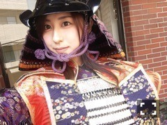
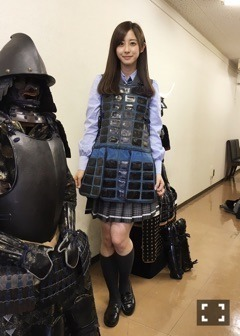
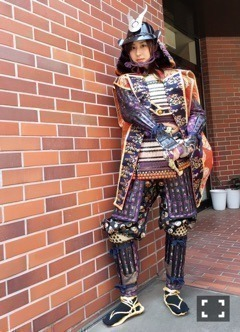
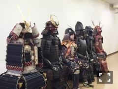

| 2016/06 29 Wed | 斎藤ちはる 戦国見聞録。別冊カドカワにて(´>∀<｀)ゝ |
ちはるーむへようこそ(｡･o･｡)ﾉ

どうも、平成の戦国武将、斎藤ちはるで御座います。
お見知り置きを。。
はい！ということで！
冗談はさておき！！！！( ◦˙ ˙◦ )
何故こんな格好をしているかというと！？
(本日はチョーカー2本着け。)
別冊カドカワが本日6/29から発売されました〜\( ˆoˆ )/
実は今回、私の連載でこの戦国武将の甲冑を着さていただきました！
そうなんです、私は現在
「戦国見聞録」という連載をさせて頂いております！
元々の歴史や考古学好きから発展して、
戦国時代、戦国武将について学んでいこう！
という連載になっております(｡･o･｡)ﾉ
前回は巻ノ壱。
大学の教授に戦国時代について詳しくお話を聞いたのですが、
今回は巻ノ弐ということで
戦国時代の象徴でもある、甲冑に焦点を絞って勉強させていただきました！
武将によって甲冑にも個性があったり
甲冑が日本に入ってきたルーツや
実際に映画などで使っている甲冑の裏話など
たくさん聞いて触って学んできました\( ˆoˆ )/
詳しくは別冊カドカワをご覧いただけたら嬉しいな〜と思います！！
オフショット1。

1番弱い兵隊(足軽)の具足を着させていただきました！
暫く着ていたら見慣れてきて、
ワンピースみたいだね！と言われました。
マネージャーマユコに。
この具足は軽くて動きやすいのですが、
敵の攻撃には耐え難いそうです。
それにしても
手前の信長の甲冑の威圧感よ。。
強そう。、いや、強いだろう。。
オフショット2。

これが甲冑の全身バージョンです！
高津装飾美術さんに着させていただきましたm(_ _)m
ありがとうございましたm(_ _)m
ポイントはなりきってるところ。
本物の武将だと思い込んでるのではないでしょうか。
でも、甲冑(今回は前鎧)を着ると本当に自分が強くなった気分になれる！
誰にも負けないぞ！って思える！！
オフショット3。
クイズ！！
ちはるを探せ！！

どうでしょう？？
溶け込んでるでしょ？？笑
正解は左から3番目でした〜\( ˆoˆ )/
正解した人には...
「ちゅ〜しちゃうぞっ♡」(c)ひめか
この写真、1番好きな写真です。
有名な武将と肩を並べているから。
私が何故か自信満々な表情をしているから。
私の張り切り度合いが物凄いから。
とにかくシュールだから。
ちなみに皆さん、どの甲冑がどの武将のものか分かる〜？？
ヒントは前立てだと思います！！
兜に付いている派手な前立て！！
歴史に詳しい皆さん！
私に沢山の知識を教えてください\( ˆ ˆ )/
オススメや、豆知識など知りたいです！
歴史に疎い皆さん！
私と一緒に学んでいきましょう\( ˆ ˆ )/
一緒に歴史求道者へ！
今日のブログはいつもよりちょっと違う、特別バージョンでした♡
おやすみ〜
斎藤ちはる